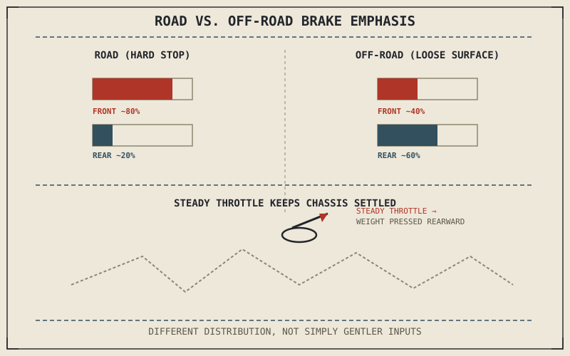

Chapter 9.13 established off-road grip as constantly and unpredictably shifting rather than simply reduced, and identified momentum, not caution, as the general strategy for managing it. Braking and throttle control are where that strategy actually gets executed, moment to moment, on terrain where the threshold-braking precision from Chapter 9.4 has to be re-learned against a friction circle that won't hold still.
Chapter 9.13 closed by naming braking and throttle control as this chapter's subject, building on the standing position and momentum management established there. This chapter covers that subject.
Rear Brake Bias, Reversing the Road Emphasis
Chapter 7.6 established that hard braking on pavement shifts most stopping force toward the front tyre, since weight transfer expands the front friction circle while shrinking the rear's. On loose, unpredictable off-road surfaces, that same weight-transfer relationship still holds, but the front tyre's already-smaller and less predictable friction circle from Chapter 9.13 makes front-wheel lockup considerably easier to trigger and harder to recover from than on pavement — off-road technique typically shifts emphasis toward the rear brake, accepting a rear-wheel slide, which is comparatively controllable, in exchange for reduced risk of the front-wheel lockup that's far more likely to cause an actual loss of control on this terrain.
Throttle as a Chassis-Stabilizing Tool, Not Just Acceleration
Chapter 8.5 described cornering load transfer increasing normal load at both tyres through lean angle; off-road, a similar principle applies to acceleration itself — a small, steady amount of throttle, maintained through a rough or loose section, keeps weight pressed rearward onto the rear tyre and keeps the chassis settled and predictable, compared to an abrupt on-off throttle that lets the suspension and chassis pitch unpredictably between load and unload states. This is throttle used partly as a stability tool, not purely as a speed control, a genuinely different role than the smooth-but-otherwise-conventional throttle technique Chapter 9.2 described for road riding.
Off-road braking reverses the road's front-brake emphasis on purpose — a rear-wheel slide is recoverable in a way a front-wheel lockup usually isn't on loose terrain, which is exactly why technique shifts toward the brake that fails more gracefully.

A comparison of road versus off-road brake emphasis, showing the road split weighted toward the front brake and the off-road split weighted toward the rear brake, alongside a chassis diagram showing steady throttle keeping weight settled rearward through a rough section.
Reading Terrain Slightly Ahead, Not At the Wheel
Because grip off-road changes within meters, as Chapter 9.13 described, effective throttle and brake control depends on anticipating an upcoming surface change slightly before reaching it — easing off ahead of a patch of loose gravel rather than reacting once the front wheel is already on it, and getting back on the throttle smoothly once past it rather than as an abrupt correction. This extends the same look-ahead vision principle Chapter 9.5 established for road cornering lines to a terrain-reading skill specific to off-road's constantly shifting surface.
A Common Misconception, Cleared Up Early
It's a common assumption that off-road riding simply calls for gentler, more timid brake and throttle inputs across the board, treating caution as the universal off-road adjustment the way it was for rain in Chapter 9.11. Off-road technique is more accurately described as differently distributed rather than universally softer — rear brake bias instead of front, steady stabilizing throttle rather than purely speed-controlling throttle, momentum maintained through brief low-grip patches rather than reduced. Off-road riding asks for different choices, not simply gentler versions of road choices.
Where This Leads
Braking, cornering, body position, and terrain-specific technique together cover how an individual rider handles a motorcycle across the environments this part has described. Riding with others — in a group, or carrying a passenger and load — introduces considerations beyond a single rider's own inputs. Chapter 9.15 turns to group riding next.
Key Concepts to Remember
- Off-road braking typically shifts emphasis toward the rear brake, accepting a more controllable rear slide over a harder-to-recover front lockup.
- Steady throttle off-road helps keep the chassis settled and weight pressed rearward, functioning partly as a stability tool rather than purely speed control.
- Off-road technique redistributes brake and throttle inputs differently from road riding rather than simply softening them universally.
Cross-References
| ← Ch. 7.6 | Established road braking's front-weighted balance; this chapter shows off-road technique deliberately reversing that emphasis for controllability. |
| ← Ch. 8.5 | Established load transfer increasing tyre load through lean; this chapter shows steady throttle producing a similar stabilizing load transfer off-road. |
| ← Ch. 9.13 | Established off-road grip changing unpredictably within meters; this chapter builds the brake and throttle technique to manage that shifting grip. |
| → Ch. 9.15 | Covers group riding, introducing considerations beyond a single rider's own inputs. |